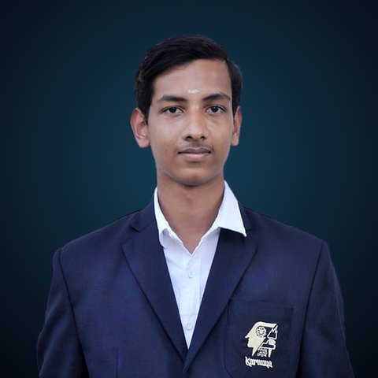

Robotics & Automation engineer (B.Tech graduate, AI specialization, CGPA 7.66 · First Class) with hands-on time on Siemens PLCs, Festo MPS cells and Yaskawa, Igus and Dobot robots. I pair industrial automation with computer vision, IIoT and CAD digital twins to build systems that sense, decide and move.
Download résuméEmail mePlay with my robot ↓LinkedInGitHub
I’m hiring for

A 2-link inverse-kinematics arm, live in your browser. Aim with your cursor or finger and press to grab a skill block. Born from my Dobot kinematics and mimic-arm work.
A Siemens-style start/stop seal-in rung. Hit START: the M contact latches the circuit. Hit STOP to release it.
Filled = advanced · outlined = intermediate · muted = basic
Graduated and open to work. Email is the best way to reach me.
arjunrose2005@gmail.comLinkedInGitHubRésumé (PDF)+91 83173 12557© 2026 Arjun Rose J S